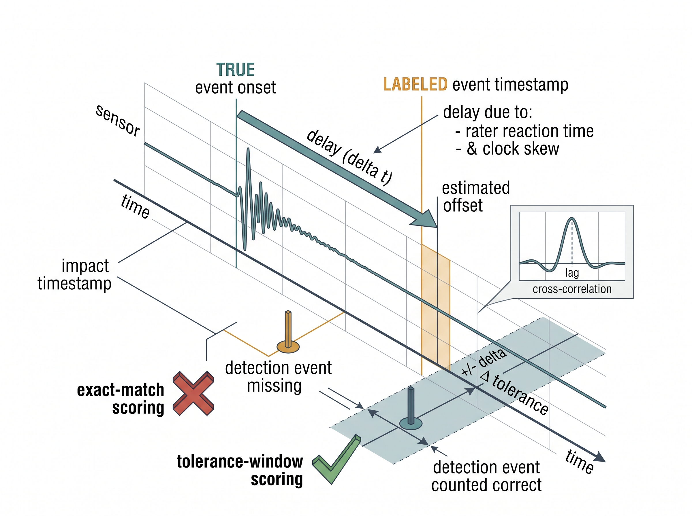

"Your model is a mirror held up to your labels. Polish the glass all you like; it still shows whatever the annotator was looking at, a second and a half too late."
A Sceptical AI Agent
The Big Picture
Every supervised sensor model has a ceiling it cannot see: the quality of the labels it learned from. Unlike photographs, sensor streams are rarely self-evident to a human. Nobody can look at a 6-axis accelerometer trace and confidently say "this is stair-climbing, that is a stumble." Labels therefore come from proxies: a rater watching video, a button a subject presses, a clinical chart written hours later, a rule fired on another channel. Each proxy is imperfect in a way that is specific to sensing: it is noisy, it is weak (coarse or indirect), and it arrives late. This section is about measuring those three defects and building datasets that survive them, because a leakage-safe split (Section 5.3) protects you from optimistic evaluation but does nothing to fix labels that are simply wrong.
This section assumes you can already cut a stream into windows and attach a label to each (Section 5.2), and that you are comfortable treating a label as a random variable with its own error distribution, the estimation mindset from Chapter 4. We take a windowed dataset as input and ask a harder question than "what model": how good are these labels, and what do I do when they are not good enough?
Why annotation quality is the real ceiling
What. Annotation quality is the degree to which the recorded label matches the true state of the world the sensor observed. Why it is hard for sensors specifically. Image and text labels are usually verifiable by the same human who assigns them; sensor labels are not. The annotator does not perceive the signal directly, so they annotate a surrogate (a synchronized video, a self-report diary, a lab reference instrument) and hope it aligns with the trace. Every gap between surrogate and signal becomes label noise. In short: a label is a measurement of the truth, not the truth, and every model you train inherits its noise, its weakness, and its delay.
Common Misconception
"The labeled data is the ground truth, so agreement with it defines correctness." This conflates the label with the state of the world it stands in for; a label is an estimate produced by a fallible proxy, and a model that matches the label set perfectly has only learned to reproduce the annotators, complete with their quirks. Treat the label column as a noisy measurement of truth, not truth itself, and reserve the phrase "ground truth" for references you have actually validated against an independent standard.
Skip this measurement and you can ship a triumphant "97% accurate" classifier that quietly disagrees with your own cardiologists on every borderline beat, because nobody ever checked whether the labels it learned from agreed with each other in the first place. How to quantify it. The workhorse is inter-rater agreement. Have multiple raters label the same windows and compute Cohen's \(\kappa\) (two raters) or Fleiss' \(\kappa\) (many), which correct raw agreement for chance:
$$ \kappa = \frac{p_o - p_e}{1 - p_e}, $$where \(p_o\) is observed agreement and \(p_e\) is the agreement expected by chance. A \(\kappa\) of 0.9 says humans barely disagree, so a model scoring 0.88 is near the human ceiling; a \(\kappa\) of 0.55 says your "ground truth" is soft, and a model reporting 0.95 accuracy against it is almost certainly fitting rater idiosyncrasies. When to insist on it. Any project where the label is a human judgement (sleep stages, activity type, pain, arrhythmia class) needs at least a subset double-annotated. Skipping this is how teams ship a "97% accurate" classifier that argues with cardiologists.
Key Insight
Report your model's metric next to the inter-rater agreement, always. A model cannot meaningfully exceed the agreement of the humans who defined its target; if it appears to, it is exploiting a single annotator's quirks and will not generalize to a second one. The human ceiling is not a nuisance to be explained away, it is the correct baseline. This is the label-quality twin of the leakage-safe evaluation thread that runs through the book: honest numbers require an honest denominator.
Step-Through: computing Cohen's \(\kappa\) for two seizure raters
Trace the formula with 100 double-annotated windows, each marked "seizure" or "clear" by two raters. The confusion counts are: both said seizure, 20; both said clear, 60; rater A seizure while B clear, 10; A clear while B seizure, 10. First the observed agreement is the diagonal over the total: \(p_o = (20 + 60)/100 = 0.80\). Next the chance agreement from the marginals: A called seizure on \(30/100 = 0.30\) of windows and B on \(30/100 = 0.30\), so both-seizure by chance is \(0.30 \times 0.30 = 0.09\); both-clear by chance is \(0.70 \times 0.70 = 0.49\); hence \(p_e = 0.09 + 0.49 = 0.58\). Finally \(\kappa = (0.80 - 0.58)/(1 - 0.58) = 0.22/0.42 = 0.52\). The lesson lands hard: raw agreement of 80% looks reassuring, yet chance-correcting drops it to a soft 0.52, so a classifier boasting 0.80 accuracy against these labels has merely reached the shaky human ceiling, not surpassed it.
Even the gold standard argues with itself
Polysomnography, the overnight multi-sensor sleep study that records brain, eye, and muscle activity together, is treated as the clinical reference for sleep staging, yet when the same 30-second epochs are scored independently by trained human experts, they agree on only about 82% of epochs (Cohen's \(\kappa\) near 0.76), and the worst-agreed stage, N1 (the lightest sleep stage, the drowsy drift into sleep), drops below 50%. That means a "sleep stage" label is partly a committee opinion, and a deep network reported at 87% agreement with one scorer may already be inside the fog where two humans disagree. The uncomfortable corollary, confirmed later by automated audits like cleanlab, is that many celebrated benchmark test sets typically carry measurable label-error rates of their own, so some models are being ranked on their skill at reproducing mistakes.
Weak labels: coarse, indirect, and programmatic supervision
Measuring how noisy your labels are tells you how far your ceiling sags; when raising that ceiling by hand is too expensive, the pragmatic response is to embrace labels that are deliberately weaker but far cheaper. What. A weak label is one that is cheaper and lower-fidelity than the label you actually want. Three flavours dominate sensor work. Coarse (multiple-instance) labels: you know a 30-minute recording "contains snoring" but not which seconds, so the bag is labeled while its instances are not. Indirect (distant) labels: a maintenance log says a pump failed on Tuesday, and you retro-attach "faulty" to the preceding week of vibration without knowing when degradation truly began. Programmatic labels: a heuristic ("heart rate above 100 and motion low implies stress") stamps millions of windows automatically.
Why bother. Because hand-labeling sensor data at scale is brutal. A single subject-day of high-rate inertial measurement unit (IMU) data is millions of samples, yet expert biosignal annotation crawls along at minutes per record. Weak supervision trades label fidelity for label volume, and for pretraining or coarse tasks that trade often wins. How to use weak labels without poisoning the model. The modern recipe is a label model. Treat each heuristic (each "labeling function") as a noisy voter. Estimate each voter's accuracy and correlations from their agreement pattern, which needs no ground truth, then combine the votes into probabilistic labels \(\tilde{y} \in [0,1]\). Train on the soft labels rather than the hard-voted ones, so the model inherits uncertainty instead of overconfident errors, a theme developed in Chapter 18. Figure 5.6.1 traces this pipeline end to end, from the noisy labeling functions on the left to the calibrated soft labels that feed training.
Mental Model
Picture a room of wall clocks, none of them showing the certified time. You cannot check any single clock against a reference, yet by noting which clocks tend to agree and which one is always five minutes fast during the afternoon, you can infer each clock's reliability and reconstruct the likely true time from a weighted vote. A label model does exactly this with labeling functions: it never sees ground truth, but it reads the pattern of agreements and disagreements to estimate how trustworthy each noisy voter is (even conditionally, like a clock that only drifts when the room is warm), then blends them into a calibrated probability instead of a naive majority count.
Practical Example: bootstrapping an arrhythmia detector from partial cardiologist review
A wearable electrocardiogram (ECG) team had 40,000 hours of single-lead recordings and cardiologist review on only 300 hours. Rather than train on the 300 hours alone, they wrote labeling functions: a beat-detector flagging RR-interval irregularity, a template-matcher for ectopic morphology (the distinctive waveform shape of an abnormal, off-rhythm heartbeat), and the sparse expert reads. The label model learned that the RR heuristic was reliable during clean signal but nearly random during motion artifact (it correlated with the noise-level channel), and down-weighted it there automatically. Training on the resulting soft labels beat training on the expert-only subset, because the model saw two orders of magnitude more (imperfect) atrial-fibrillation examples. The expert reads were not discarded; they became the held-out set for honest evaluation and the anchor that calibrated the label model. Full clinical-grade validation still followed the process in Chapter 34.
Real-World Application: Apple Watch ECG
The Food and Drug Administration (FDA)-cleared Apple Watch ECG feature never treats a single reading as truth: its rhythm classifier was validated against simultaneous 12-lead ECGs whose interpretations were adjudicated by multiple cardiologists, with inter-rater agreement measured explicitly so the model's performance is quoted against the human ceiling rather than one expert's opinion. Recordings the algorithm cannot confidently classify are returned as "inconclusive" instead of a forced label, the deployment-time echo of a label model outputting soft probabilities rather than an overconfident hard vote.
Label delay and temporal misalignment
Fidelity is only one axis on which a label can fail: even a perfectly accurate label is worthless if it is pinned to the wrong instant. What. Label delay is a temporal offset between when an event happens in the signal and when its label is timestamped. Why it is endemic to sensing. Reaction time (a rater presses a marker after they notice the event), annotation-tool lag, clock skew (the two devices' clocks drifting apart over time) between the labeling device and the sensor (see synchronization in Chapter 3), and retrospective charting (a nurse logs "seizure at 14:05" from memory) all shift labels relative to the trace. A 300 ms button-press lag is trivial for detecting an hour-long sleep stage and catastrophic for detecting a 200 ms tap gesture.
Checkpoint
So far: a label can be noisy (the wrong class), weak (a coarse or indirect stand-in), or delayed (the right class pinned to the wrong instant), and each of these three defects has its own separate measurement and its own separate fix.
How to handle it. First, estimate the offset: cross-correlate a strong signal feature (an onset energy burst) against the label edges and read off the lag. Second, correct it by shifting the labels. When the delay is variable instead, score with tolerance: count a detection as correct if it lands within a window \(\pm\delta\) of the annotation, the standard practice in event detection scoring. Third, in causal deployment, remember that the model can only label the past. A trailing-edge label therefore carries its own structural delay, which you must budget separately from annotation lag. When it bites hardest. Short-duration events and any evaluation that demands sample-exact boundaries. If you score a delayed-label dataset with zero tolerance, you will punish a correct model for the annotator's reflexes. Figure 5.6.2 illustrates label delay and temporal misalignment in event scoring.

Watch Out: delay masquerading as poor accuracy
A constant label delay makes an otherwise-perfect detector look mediocre under exact-match scoring, and worse, it can teach the model the delay. If every "impact" label sits 120 ms after the true impact, the model learns to predict the shoulder of the event, not the event, and that bias ships to production. Always plot predicted-vs-labeled event times before trusting a low score; a tell-tale diagonal offset means fix the labels, not the model.
Measuring and living with label noise
Noise, weakness, and delay all leave the same residue, a fraction of windows whose recorded label is wrong, and the closing move is to hunt those windows down. You cannot fix what you cannot find. Confident learning gives a practical, model-agnostic way to locate likely-mislabeled windows: train a classifier with cross-validation so every example gets an out-of-fold predicted probability, where out-of-fold means the prediction comes from a model that never saw that example during training, then flag examples the model confidently disagrees with. Examples where the given label has low self-confidence and another class has high confidence are your prime suspects for relabeling. The snippet below implements the core idea on a windowed sensor dataset.
Confident learning, precisely. It is a model-agnostic procedure that estimates the joint distribution between the labels on file (possibly wrong) and the true latent classes, using only a classifier's out-of-fold predicted probabilities and per-class confidence thresholds, never an external oracle. It turns the vague question "which labels are wrong?" into a calibrated ranking: count how often the model confidently prefers a class other than the recorded one, normalize those counts into an estimated noise matrix, and order windows by their probability of being mislabeled. Reach for it when you have enough data to cross-validate reliably. When the dataset is too small for trustworthy out-of-fold probabilities, prefer a robust loss or cleaner labels instead.
import numpy as np
from sklearn.ensemble import HistGradientBoostingClassifier
from sklearn.model_selection import cross_val_predict
def suspect_labels(X, y, threshold=0.5):
"""Flag windows whose given label is likely wrong.
X: (N, D) window features; y: (N,) integer labels."""
clf = HistGradientBoostingClassifier(max_iter=200)
# out-of-fold probabilities: no window scores itself
proba = cross_val_predict(clf, X, y, cv=5, method="predict_proba")
self_conf = proba[np.arange(len(y)), y] # P(given label)
best_other = proba.max(axis=1) # P(model's pick)
pred = proba.argmax(axis=1)
# low confidence in the given label, high in a different class
suspect = (pred != y) & (self_conf < threshold) & (best_other > 0.7)
return np.where(suspect)[0], self_conf
rng = np.random.default_rng(0)
X = rng.normal(size=(2000, 16))
y = (X[:, 0] + 0.3 * rng.normal(size=2000) > 0).astype(int)
y[:40] = 1 - y[:40] # inject 40 flipped labels
idx, conf = suspect_labels(X, y)
print(f"flagged {len(idx)} windows; "
f"{np.sum(idx < 40)}/40 injected errors caught")
suspect_labels function: confident-learning label auditing on windowed features. Cross-validated predict_proba ensures no window judges its own label; the suspect mask flags windows where the model strongly prefers a different class than the one on file, surfacing the 40 injected flips for human re-review.The audit above does not silently overwrite labels; it produces a queue for a human to re-check, cheapest-first. That distinction matters: automated relabeling of your own suspects can amplify the model's biases, whereas targeting scarce annotator time at the highest-suspicion windows is almost pure upside.
Right Tool: label models and noise audits in a few lines
Rolling your own label model (estimating labeling-function accuracies and correlations from their agreement matrix) or a full confident-learning pipeline (per-class thresholds, joint noise-matrix estimation, ranking) is roughly 150 to 300 lines of subtle probability code. snorkel's LabelModel turns a stack of weak labeling functions into calibrated soft labels in about 5 lines, and cleanlab's find_label_issues reduces the audit above to a single call over out-of-fold probabilities. You still supply the labeling functions and the model; the library handles the estimation math that is easy to get quietly wrong.
Research Frontier
Confident learning audits one label column at a time, but real sensor datasets fail in several ways at once: near-duplicate windows, outliers, drift, and ambiguous overlap. Cleanlab's Datalab (2023) generalizes the out-of-fold-probability idea into a single audit that flags label errors, outliers, (near-)duplicates, and class imbalance together, turning the manual triage in this section into one automated report. On the weak-supervision side, 2023-era systems increasingly replace hand-written labeling functions with zero-shot foundation-model annotators whose noisy votes feed the same label-model machinery, so the human effort shifts from writing heuristics to auditing the aggregated soft labels. The frontier direction is a unified data-centric pass that scores noise, redundancy, and coverage jointly before a single epoch of training runs.
Exercise
Take a labeled activity-recognition recording (for example the human-activity data revisited in Chapter 26). (a) Inject a constant 400 ms label delay and score a simple change-point detector with exact-match and with \(\pm250\) ms and \(\pm500\) ms tolerance; report how the F1 changes. (b) Estimate the injected delay by cross-correlating windowed signal energy against the label edges and confirm you recover roughly 400 ms. (c) Flip 3% of window labels at random, run the confident-learning audit from the code above, and report precision and recall of the flagged set against the known flips. Write two sentences on which defect, delay or noise, would have hurt a naive model more.
Self-Check
- Your classifier reports 0.94 accuracy and the two annotators who defined the labels agree at \(\kappa = 0.61\). What is the most likely explanation, and what should you do before celebrating?
- Why should a label model output soft probabilities rather than hard majority votes over the labeling functions, and where does that uncertainty help downstream?
- You detect a constant 120 ms offset between predicted and labeled impact times. Name one fix at the label level and one at the evaluation level, and say which you would prefer for a production detector and why.
Try It: catch your own planted label errors
Validate the entire audit loop on data where you control the truth, so you can measure whether it actually works.
- Load any labeled tabular or windowed dataset into
Xandywith NumPy or pandas (for examplesklearn.datasets.load_digits, or a human-activity CSV of window features). - Corrupt a known 5% of the labels: draw random indices with a fixed seed, flip each to a different class, and save that index array as your ground-truth error set.
- Run the
suspect_labelsfunction from this section (orcleanlab.filter.find_label_issues) on the corruptedX,yto get the flagged windows. - Compute precision and recall of the flagged set against your saved indices in a few lines of NumPy, so you know how many planted errors it caught and how many clean windows it wrongly accused.
- Sweep the confidence
thresholdfrom 0.3 to 0.8 and plot precision and recall with matplotlib to see the triage tradeoff you would hand a human reviewer.
Lab: soft labels beat majority vote with Snorkel
Goal. Feel, empirically, why a label model's calibrated soft labels outperform a naive majority vote when your weak labeling functions are noisy and correlated. Budget 15 to 30 minutes.
Tools. Python with snorkel (pip install snorkel), scikit-learn, and matplotlib. Use any labeled tabular or windowed dataset with a held-out test split (for example a human-activity CSV of window features, or sklearn.datasets.load_breast_cancer as a fast stand-in).
Steps. (1) Hide the true labels on the training split and write 5 to 7 deliberately imperfect labeling functions, thresholds on single features, each abstaining (return -1) where it is unsure. (2) Make two of them correlated on purpose by keying them off the same feature, so a naive vote double-counts that signal. (3) Build the label matrix, fit Snorkel's LabelModel to get soft probabilities, and separately compute a plain MajorityLabelVoter baseline. (4) Train the same classifier twice, once on the soft labels and once on the hard majority labels, and evaluate both against the truly-held-out test labels.
What to vary. The number of labeling functions, how much they abstain, and the strength of the injected correlation between the two twinned functions. What to observe. The label model should pull ahead of majority vote precisely as correlation and abstention rise, because it estimates and discounts the redundant voters instead of letting them outvote the others; watch the gap widen as you make the weak supervision messier.
What's Next
In Section 5.7, we make all of these decisions reproducible. Windowing choices, split boundaries, calibration constants, and now label provenance and label-model versions become part of a versioned data contract, so that when your labels improve or your delay estimate changes, every downstream artifact can be rebuilt and re-evaluated without guesswork.